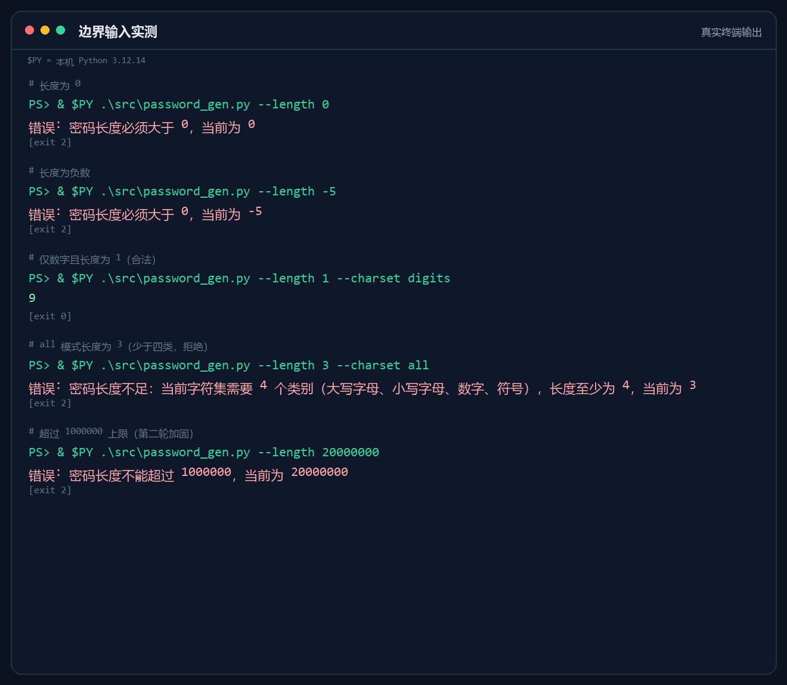

密码学随机
使用 secrets.choice，不用可预测的伪随机数生成器。随机性不是装饰，是工具的地基。
PROJECT 01 / CLI TOOL
PASSFORGE
把“随机”做成一件可信的小工具。不是生成一串看起来像密码的字符，而是让每一次输出都能解释、能验证、能复现。

口令锻造所是一个命令行随机密码生成器。它支持四种字符集、可指定长度，并用 Python 标准库 secrets 生成密码学安全的随机结果。每一类字符至少出现一次，长度不足时会在分配内存之前直接拒绝。
这个项目最初只有 202 行。测试时发现，输入 --length 20000000 会让程序长时间没有响应；第二版加上 1,000,000 的长度上限，把错误路径收束成一行可读的中文提示，再用 17 个功能/边界用例和 130 次稳定性运行把它压住。
“密码工具最容易犯的错，是看起来随机，其实不可信。”
—— 这次返工留下的判断
使用 secrets.choice，不用可预测的伪随机数生成器。随机性不是装饰，是工具的地基。
字符集决定最小长度：数字 1 位、字母 2 位、字母加数字 3 位、全部 4 位。校验发生在生成之前。
失败只输出一行中文错误，退出码 2，不打印 traceback。终端里的错误也应该是给人看的。
下载本页的 password_gen.py，或克隆仓库。
git clone https://github.com/yingqingshui1/web-phase4-yingqingshui1.git
默认使用 all 字符集，包含大小写字母、数字和符号。
python assets/password_gen.py --length 16
只用数字，生成 20 位；长度不足或超过上限会以退出码 2 拒绝。
python assets/password_gen.py --charset digits --length 20
需要 Python 3.10+。没有系统 Python 时，先建虚拟环境；Windows 下把 python 换成你的解释器路径即可。

核心逻辑只有几件事：解析参数、按类别抽字符、打乱、校验、输出。下面是长度校验的片段。
MAX_LENGTH = 1_000_000
def validate_length(length: int) -> None:
if length <= 0:
raise PasswordError(f"密码长度必须大于 0，当前为 {length}")
if length > MAX_LENGTH:
raise PasswordError(
f"密码长度不能超过 {MAX_LENGTH}，当前为 {length}"
)文件：assets/password_gen.py · 219 行 · 标准库实现，无第三方依赖。